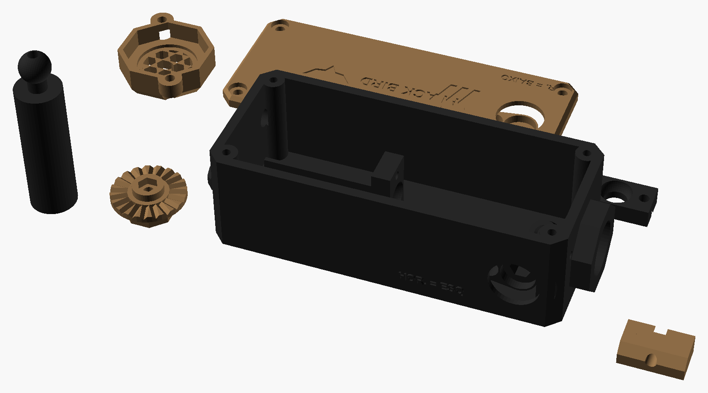

Caixa estilo PEQ, só com laser (sem lanterna), na ponta do trilho de cima do guarda-mão. Duas torres com clique, iguais às da luneta, movem o laser para cima/baixo e esquerda/direita: assim o ponto verde fica exatamente onde a BB bate, no mesmo lugar do retículo da sua Red Win. Liga pelo seu acionador de M-LOK (cabo P2). Medidas em milímetros.
No modo "tamanho real", 1 mm do desenho = 1 mm na sua tela (depois de calibrar).
Encoste um cartão de crédito/débito na tela e mova o controle até o retângulo ter exatamente o mesmo tamanho (85,6 × 54 mm).
px/mm
cartão 85,6 × 54 mm
01Visão geral
116 × 52 × 43com o capuz, a torre do lado e a garra (mm)
≈ 120 gcom a pilha (estimativa)
20 cliques/volta1 clique ≈ 2,8 cm a 50 m · ± 1,5 m de ajuste a 50 m
≈ 4 h ligadopilha 16340 recarregável, carga USB-C
R$ 89–177reaproveitando os kits (você já tem o acionador); do zero, R$ 123–224
Por que intermediário: não tem placa nem código (só pilha, laser, jack e chave), mas as torres e o pivô são mecânica de precisão: impressão fina, contraporcas bem apertadas e montagem com calma.
02Como funciona
Peça
O que faz
Berço com pivô
O laser fica num tubo impresso (berço) que tem uma bola atrás. A bola fica presa entre o bloco de trás da caixa e a trava do pivô: o berço só pode inclinar, não anda
Torre de cima (elevação)
Empurra a frente do berço para baixo. Horário = ponto desce (está gravado "HOR. = BAIXO" na tampa)
Torre do lado direito (deriva)
Empurra a frente do berço para a esquerda. Horário = ponto vai para a esquerda ("HOR. = ESQ" em relevo ao lado)
Mola diagonal
Embaixo, à esquerda, empurra o berço contra os 2 parafusos: sem folga, o ponto não pula com o recuo
O clique
Uma BB de 6 mm com molinha encosta nas 20 ranhuras de baixo do botão: 20 cliques por volta, 0,5 mm de rosca por volta. Cada clique move o ponto ≈ 2,8 cm a 50 m (≈ 2,2 cm a 40 m). As 20 marcas na tampa do botão ajudam a contar
Por que o parafuso não gira
O botão gira uma porca presa dentro dele. O parafuso tem uma contraporca apertada na cabeça que corre num canal sextavado: ele não consegue girar, só andar para dentro e para fora
Ligar
Acionador de M-LOK no jack P2 de trás: acende enquanto você aperta. Chave CONTÍNUO atrás: fica aceso (para zerar ou usar parado)
Como zerar o laser com a luneta: (1) com a luneta já zerada, apoie o rifle e atire um grupo de 5 BBs num alvo a 40 m (ou a distância em que você mais atira); (2) com a chave CONTÍNUO ligada e o rifle parado, gire a torre de cima até o ponto verde ficar na altura do centro do grupo; (3) gire a torre do lado até ele ficar no centro; (4) confira com mais 5 tiros. O laser sai ≈ 35 mm abaixo da luneta, então perto (10–20 m) o ponto fica alguns centímetros abaixo: normal.
03O aparelho
Caixa preta de 110 × 46 × 33 com tampa coyote (emblema e nome BLACK BIRD, a única marca do projeto) e nervuras apontando para a frente. Embaixo, 2 garras Picatinny com mandíbulas coyote. Por dentro, de trás para a frente: o TP4056 deitado no fundo com o USB-C saindo atrás, a pilha 16340 no suporte por cima dele, o bloco do pivô com a bola do berço, o berço com o laser verde e, na frente, as 2 torres e a mola diagonal. Atrás, com molduras de proteção: o jack P2 do acionador (lado direito) e a chave CONTÍNUO (lado esquerdo). Na frente, a proteção anti-BB coyote (removível, 2 M3) cobre o capuz: grade de favos de 4,2 mm, onde a BB de 6 mm não passa, com um furo de 4 mm no centro para o laser, e lugar para um disco de policarbonato de 1 mm atrás (opcional).
3DPeças 3D · estilo tático facetado
Todas as peças impressas, nas cores de impressão (coyote e preto); cada peça sai de uma cor só. Arquivos em 3D/stl; quantidades, ferragens e configuração no 3D/LEIA-ME.txt.

Caixa, berço e trava do pivô pretos; tampa, 2 botões das torres (facetados, com 20 marcas), 2 mandíbulas e a proteção anti-BB coyote.
04Componentes
Componente
Medidas (mm)
Função
Módulo laser verde 520 nm, ponto, ≤ 5 mW, com driver, 3–5 V
Ø 12 × 45
O laser (entra justo no berço)
Pilha 16340 recarregável 3,7 V + suporte 16340/CR123A
Ø 17 × 34 · 40 × 20
Energia (≈ 700 mAh)
TP4056 USB-C (do kit do 04)
28 × 17
Carrega a pilha pela traseira
Jack P2 3,5 mm estéreo fêmea de painel
furo Ø 6
Entrada do seu acionador de M-LOK (cabo P2)
Chave alavanca mini MTS-102
furo Ø 6
CONTÍNUO (liga sem segurar o botão)
2 BBs de 6 mm, 2 molinhas e 1 mola de caneta
—
Cliques das torres e a mola que segura o berço
Parafusos M3 + 4 porcas (ver LEIA-ME)
—
Torres, pivô, tampa e garras
Seu acionador duplo de M-LOK (já tem)
—
O cabo P2 vai aqui; o cabo SF vai na lanterna IR da visão noturna (14)
Peças impressas (pasta 3D)
—
caixa, tampa, berço, trava do pivô, 2 botões das torres, 2 mandíbulas, proteção anti-BB
05Ligação elétrica
Sem placa e sem código. O jack e a chave ficam em paralelo: qualquer um dos dois liga o laser.
De
Para
Observação
Pilha + / −
TP4056 B+ / B−
Pelo suporte 16340
TP4056 OUT+
Laser (+), fio vermelho
—
Laser (−), fio preto
Jack: ponta + anel (juntos) · chave: um terminal
Juntando ponta e anel, qualquer botão do cabo P2 liga
Jack: corpo · chave: outro terminal
TP4056 OUT−
Jack e chave em paralelo
Confira com o multímetro (modo continuidade) quais partes do plugue P2 do seu acionador fecham quando você aperta o botão. Se for ponta + corpo ou anel + corpo, a ligação acima já funciona.
06Montagem passo a passo
Imprima seguindo o 3D/LEIA-ME.txt (botões e berço com camada fina). Confira se o seu laser tem Ø 12 × 45; se não, mude LASER_D e LASER_L.
Teste o laser direto na pilha antes de montar (cuidado com os olhos).
Torres: ponha a porca no fundo de cada botão. Em cada parafuso (M3 × 12 em cima, M3 × 16 do lado), rosqueie uma contraporca até a cabeça e aperte as duas com 2 chaves.
Cliques: molinha e BB no furo ao lado de cada torre; encaixe o botão por dentro (a aba fica presa pela borda) e rosqueie o parafuso na porca do botão, de dentro para fora, com a contraporca entrando no canal sextavado.
Berço: empurre o laser no berço até o fundo (passe os fios pelo furo da bola). Ponha a bola no bloco de trás e aperte a trava do pivô com 2 M3 × 12: firme, mas deixando o berço inclinar com a mão.
Mola no furo diagonal embaixo, encostando no berço.
Atrás: TP4056 no fundo (USB-C no furo), suporte da pilha por cima nos apoios, jack P2 e chave MTS-102 com as porcas por fora. Solde conforme a ligação.
Tampa com 4 M3 × 10 (os 2 pinos dela seguram o suporte da pilha).
Proteção anti-BB: (opcional) ponha o disco de policarbonato de 1 mm no rebaixo de trás, encaixe a proteção no capuz e prenda com 2 M3 × 12.
No rifle: 2 garras no trilho de cima, na ponta do guarda-mão; aperte os 2 parafusos atravessados. Ligue o acionador no jack e zere (seção 02).
07Custo de produção
Valores de out/2026, sem frete, só produtos novos (os links do Mercado Livre já abrem com o filtro "Novo"). Não achei preços exatos no Brasil nas buscas: são estimativas de anúncios comuns; confira antes de comprar. Peças impressas não entram.
Olhos: laser de 5 mW (classe 3R) machuca o olho se olhar direto ou mirar no rosto de alguém. Óculos de airsoft não protegem contra laser. Nunca aponte para pessoas; use para zerar e mirar no alvo.
Regras do campo: muitos campos proíbem laser visível em jogo ou só deixam com potência baixa. Confirme antes e, se precisar, use um módulo de 1 mW (classe 2).
O TP4056 do kit carrega com 1 A, forte para uma 16340 (≈ 700 mAh). Troque o resistor marcado 122 perto do chip por um de 2,4 kΩ (carga de 500 mA), ou carregue a pilha num carregador externo.
Confira a tensão do seu laser. Se for "3 V" (não 3–5 V), ponha um diodo 1N4007 em série no fio vermelho (baixa ≈ 0,7 V) para não queimar com a pilha cheia (4,2 V).
A caixa (37 mm) fica abaixo da visão da luneta; só a torre de cima passa uns 5 mm, longe da objetiva, e fica desfocada (não aparece).